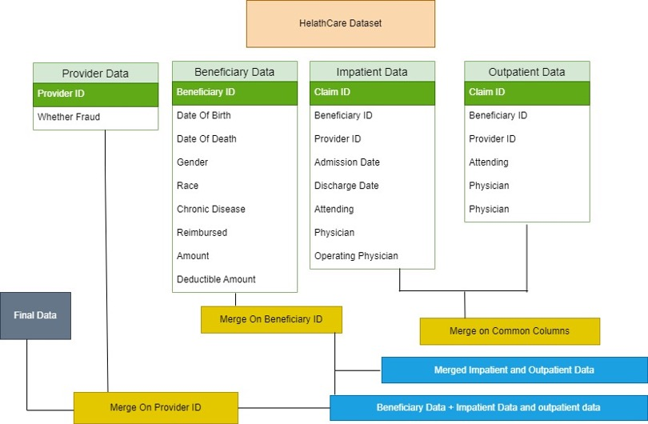
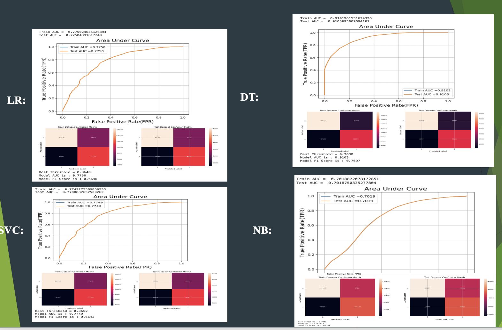
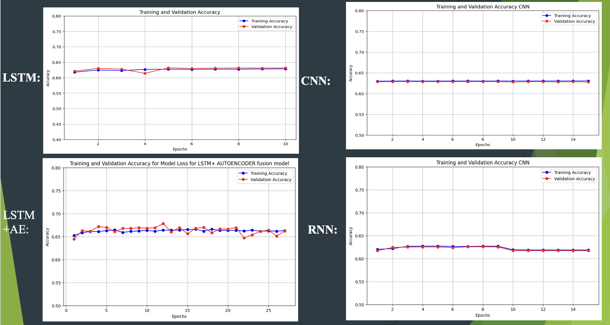

Methodology
Data Preparation
Hospital admission and outpatient visit records are merged on matching elements. Beneficiary information is then aligned with this data via individual IDs. In the final step, healthcare provider details are incorporated using provider IDs, creating a comprehensive dataset for insights.
Figure 1: Data Preperation
Data Preprocessing
In data preprocessing, patient ages are calculated from birthdates, and claim times plus hospital stays are analyzed for trends. Data is then normalized, relevant features selected for better model accuracy, and categories are turned into numbers.
Exploratory Data Analysis
Figure 2:Top-10 Procedures and Diagnosis codes Involved in Healthcare Fraud


Bar chart showing top 10 medical procedures and diagnosis code with their counts and potential fraud indicators.
Figure 3:Physicians and chronic conditions Imapct in Healthcare Fraud


Bar chart and pie chart display potential healthcare fraud by provider and the link between chronic conditions and fraud cases.
Figure 4:Analysis of Hospital Stay Duration and Claim Costs in Relation to Healthcare Fraud Indicators


Scatter plot correlates longer hospital stays with higher claim periods, marked for potential fraud. Bar chart shows most claims are low-cost, with some flagged as fraudulent across cost ranges..
Figure 5: Top 20 Predictive Features for Healthcare Fraud Detection in Claims Data

Diagnosis codes and reimbursement amounts are key predictors of fraud in healthcare claims.
Model Building
We implemented several models, including Logistic Regression, Decision Trees,Random Forest,CNN,LSTM+AE,RNN.
Results
Machnie learning Models
Figure 6:Comparative Performance Analysis of Machine Learning Models for Fraud Detection
The Decision Tree (DT) model outperforms others, showing higher Area Under Curve (AUC) scores in both training and testing.
Deep learning Models
Figure 7:Performance Comparison of Deep Learning Models on Training and Validation Sets
LSTM and LSTM with Autoencoder show similar stability in accuracy, while CNN and RNN models display consistent validation performance.
Results Comparision
ML Models Accuracy
| ML Models | Accuracy |
|---|---|
| Logistic Regression | 0.704 |
| Decision Tree | 0.829 |
| Support Vector Classifier | 0.703 |
| Naive Bayes | 0.629 |
| Random Forest | 0.811 |
DL Models Accuracy
| DL Models | Accuracy |
|---|---|
| LSTM | 0.629 |
| LSTM+AE | 0.666 |
| CNN | 0.631 |
| RNN | 0.620 |
Decision Tree outperforms all models with Random Forest following, while LSTM-based models lead in deep learning category
Conclusion and Future Work
Conclusion
1.Identified different types of fraud from data analysis.
2.Decision Tree, Random Forest models show superior performance, high accuracy.
3.DL models, with LSTM+AE, show promise in complex fraud pattern recognition.
4.Reimbursements are key indicators of potential fraud. Diagnosis codes strongly correlate with fraudulent activities.
Future Work
1.Collaborate with healthcare professionals to uncover new fraud typologies.
2.Experiment with various data encoding methods to boost model precision.
3.Enrich datasets with comprehensive profiles of healthcare providers.
4.Build instant fraud alert systems for healthcare transaction monitoring.
5.Train models to differentiate between fraud and legitimate billing anomalies.